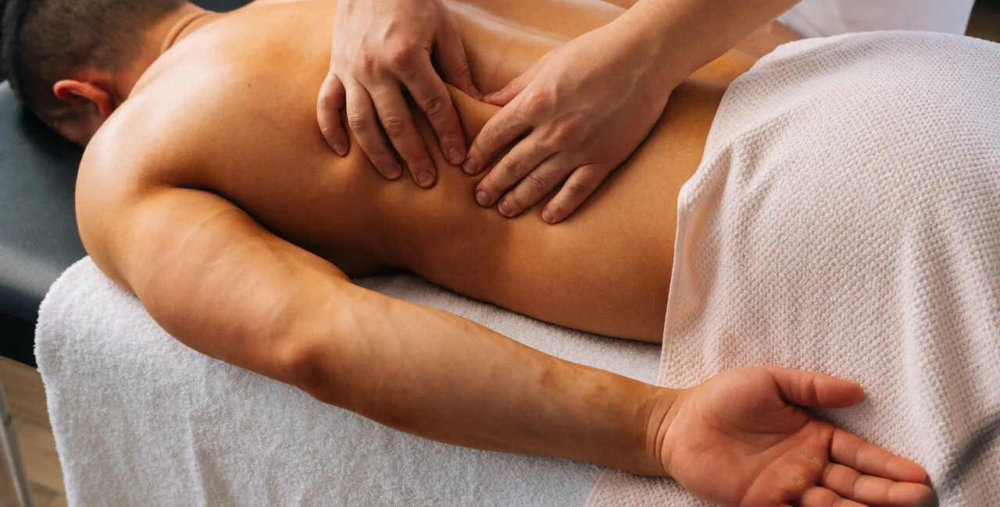

Mobilizacje tkanek miękkich
Techniki pracy na mięśniach, więzadłach i powięziach, które pozwalają skuteczniej je rozluźnić: masaż głęboki i poprzeczny, praca na punktach spustowych. Źródło bólu bywa w innym miejscu niż sama dolegliwość — wtedy ukierunkowana terapia manualna daje więcej niż rozciąganie czy ćwiczenia.